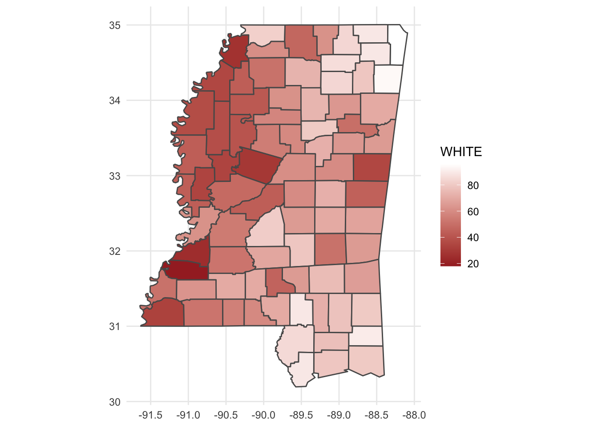
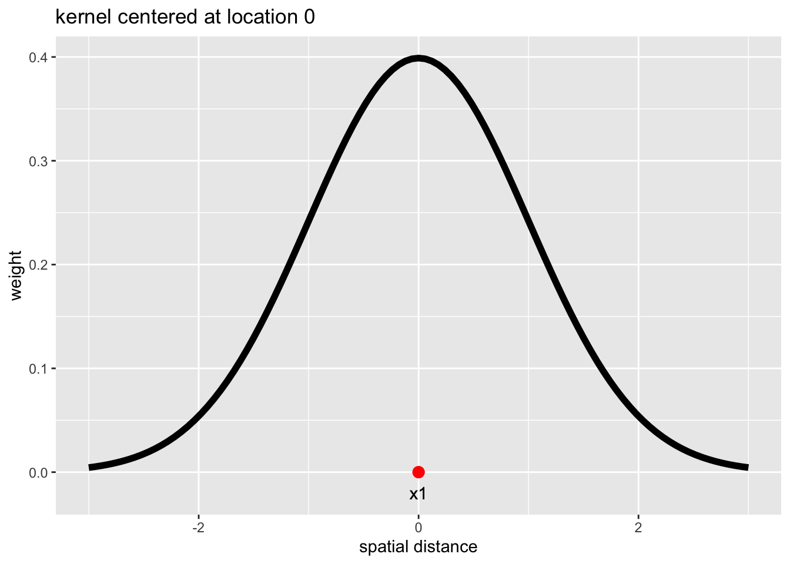
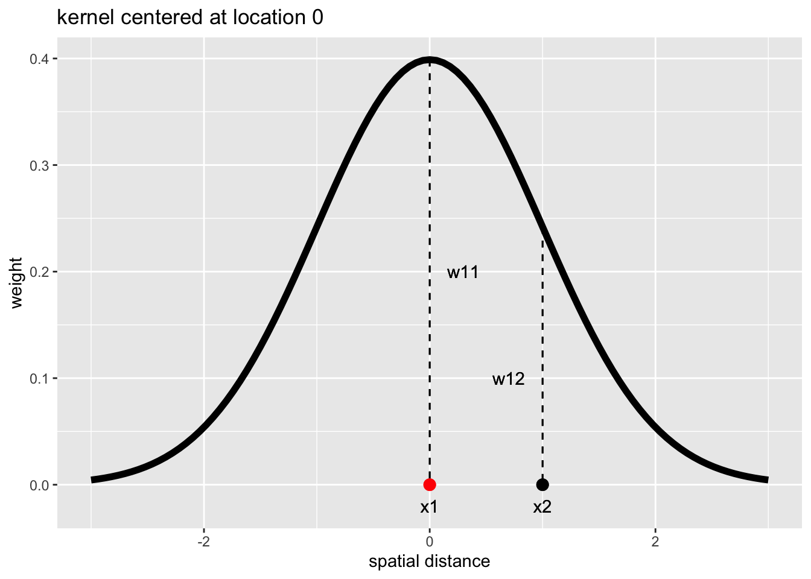
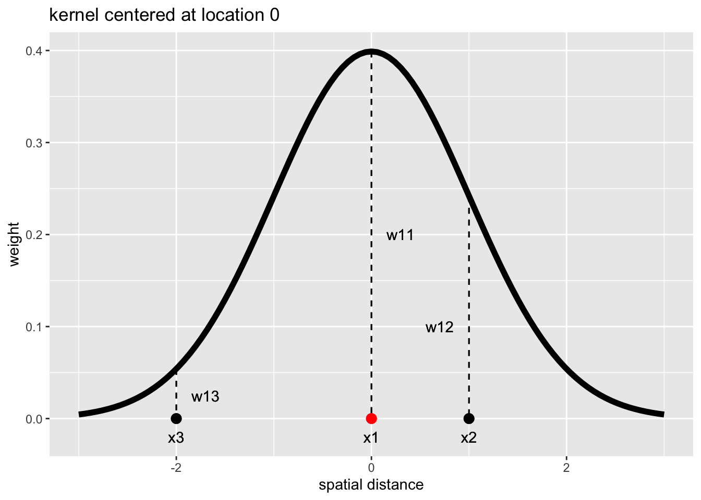

Tuesday, November 15, 2022
Today
- Bivariate spatial autocorrelation
- Local spatial autocorrelation
- Local regression
- Spatial weights
Recall the demographic data from the state of Mississippi at the county level. The data are available as ESRI shape files in the folder police. First we import the data to create a simple feature data frame called PE.sf.
PE.sf <- sf::read_sf(dsn = here::here("data", "police"),
layer = "police")
names(PE.sf)## [1] "AREA" "PERIMETER" "CNTY_" "CNTY_ID" "NAME"
## [6] "STATE_NAME" "STATE_FIPS" "CNTY_FIPS" "FIPS" "FIPSNO"
## [11] "POLICE" "POP" "TAX" "TRANSFER" "INC"
## [16] "CRIME" "UNEMP" "OWN" "COLLEGE" "WHITE"
## [21] "COMMUTE" "geometry"The simple feature data frame includes police expenditures (POLICE), crime (CRIME), income (INC), unemployment (UNEMP), percentage of people who identify as white (WHITE) among other socioeconomic characteristics in Mississippi by county.
Police expenditures are dollars per person in 1982. The crime variable is the number of serious crimes per 100,000 residents in 1981. The income variable is personal income per county resident in 1982 (dollars per person). The unemployment variable is percent unemployed in 1980.
Because PE.sf is a simple feature data frame it has a column labeled geometry. Here the column contains polygons defining the longitude and latitude coordinates in WKT format that define the county borders.
head(PE.sf$geometry)## Geometry set for 6 features
## Geometry type: POLYGON
## Dimension: XY
## Bounding box: xmin: -90.30535 ymin: 34.46518 xmax: -88.09043 ymax: 35.00496
## CRS: NA
## First 5 geometries:## POLYGON ((-88.35416 34.76262, -88.71059 34.7596...## POLYGON ((-88.32171 34.4693, -88.3175 34.74454,...## POLYGON ((-88.72614 34.60488, -89.07788 34.6071...## POLYGON ((-89.23874 34.59352, -89.29233 34.5927...## POLYGON ((-90.20186 34.72979, -90.19975 34.8669...A simple way to display the county borders is to apply the plot() method to the geometry column.
plot(PE.sf$geometry)Recall that to compute spatial autocorrelation you need a spatial weights matrix. The spatial weights matrix includes the set of neighbors and their weights.
nbs <- spdep::poly2nb(PE.sf)
wts <- spdep::nb2listw(nbs)You then apply the moran.test() function. Here we apply the function to the variable labeled WHITE.
spdep::moran.test(PE.sf$WHITE,
listw = wts)##
## Moran I test under randomisation
##
## data: PE.sf$WHITE
## weights: wts
##
## Moran I statistic standard deviate = 8.5089, p-value < 2.2e-16
## alternative hypothesis: greater
## sample estimates:
## Moran I statistic Expectation Variance
## 0.563477779 -0.012345679 0.004579648The Moran I statistic is .56 and it is statistically significant indicating counties that are predominantly white tend to be surrounded by counties that are also predominately white.
Bi-variate spatial autocorrelation
Spatial autocorrelation can be extended to two variables. The extension is motivated by the fact that association measures, like Pearson’s correlation coefficient, do not recognize the spatial arrangement of the data values.
Consider for example the correlation between police expenditure (POLICE) and the amount of crime (CRIME) in the police expenditure data set.
police <- PE.sf$POLICE
crime <- PE.sf$CRIME
cor.test(police, crime)##
## Pearson's product-moment correlation
##
## data: police and crime
## t = 6.2916, df = 80, p-value = 1.569e-08
## alternative hypothesis: true correlation is not equal to 0
## 95 percent confidence interval:
## 0.4094516 0.7043990
## sample estimates:
## cor
## 0.5753377You find a significant correlation (\(p\) value < .01) between these two variables under the null hypothesis that they are uncorrelated. The significance level assumes that the values of police expenditure and crime in one county is independent of the values of expenditure and crime in a neighboring county.
You note, however, that these variables have significant spatial autocorrelation.
spdep::moran.test(police, listw = wts)##
## Moran I test under randomisation
##
## data: police
## weights: wts
##
## Moran I statistic standard deviate = 1.7899, p-value = 0.03674
## alternative hypothesis: greater
## sample estimates:
## Moran I statistic Expectation Variance
## 0.087185424 -0.012345679 0.003092257spdep::moran.test(crime, listw = wts)##
## Moran I test under randomisation
##
## data: crime
## weights: wts
##
## Moran I statistic standard deviate = 2.2072, p-value = 0.01365
## alternative hypothesis: greater
## sample estimates:
## Moran I statistic Expectation Variance
## 0.103588680 -0.012345679 0.002758842The spatial autocorrelation indicates that the counties cannot be treated as independent.
In addition there can be indirect correlation, where the amount of police spending in a particular county is correlated with the level of crime in neighboring counties.
The Lee statistic brings together Pearson’s r statistic and Moran’s I. The formula is \[ L(x,y) = \frac{n}{\sum_{i=1}^{n}(\sum_{j=1}^{n}w_{ij})^2} \frac{\sum_{i=1}^{n}(\sum_{j=1}^{n}w_{ij}(x_i-\bar{x})) ((\sum_{j=1}^{n}w_{ij}(y_j-\bar{y}))}{\sqrt{\sum_{i=1}^{n}(x_i - \bar{x})^2} \sqrt{\sum_{i=1}^{n}(y_i - \bar{y})^2}} \] For the crime example, you let \(x\) be crime rates and \(y\) be police spending.
The formula is applied with the lee() function where the first two arguments are the variables and you need to include the weights matrix with the listw = argument and the number of regions with the n = argument. The output from this function is a list of two with the first being the value of Lee’s statistic (L).
spdep::lee(x = crime,
y = police,
listw = wts,
n = length(nbs))$L## [1] 0.1306991Values of the Lee statistic can range between -1 and +1 with the value of .13 here indicating weak bi-variate spatial autocorrelation between crime and police expenditures. You state that police spending has some weak correlation with crime in neighboring counties, but not much.
You note that neither values in crime nor values in police are adequately described by a normal distribution.
sm::sm.density(crime, model = "normal")
sm::sm.density(police, model = "normal")So you use a non-parametric (Monte Carlo) test for significance on the bivariate spatial autocorrelation with the lee.mc() function.
The crime and police expenditure values are randomly permuted across the counties and values of L are computed for each permutation. Here we set the number of permutations to 999 with the nsim = argument.
spdep::lee.mc(x = crime,
y = police,
listw = wts,
nsim = 999)##
## Monte-Carlo simulation of Lee's L
##
## data: crime , police
## weights: wts
## number of simulations + 1: 1000
##
## statistic = 0.1307, observed rank = 758, p-value = 0.242
## alternative hypothesis: greaterFrom the test results you conclude that there is no significant bi-variate spatial autocorrelation between crime and police expenditure. Police expenditure in a county is not significantly influenced by crime in neighboring counties.
Local autocorrelation
The Moran I statistic was first used in the 1950s. A local version of the statistic was introduced in the 1990s.
Local I is a deconstruction of the ‘global’ Moran’s I, where geographic proximity is used in two ways. (1) to define and weight neighbors and (2) to determine the spatial scale over which Moran’s I is computed.
For example, consider the tenth county in the police expenditure data frame.
PE.sf[10, ]## Simple feature collection with 1 feature and 21 fields
## Geometry type: POLYGON
## Dimension: XY
## Bounding box: xmin: -89.24072 ymin: 34.37103 xmax: -88.72366 ymax: 34.60714
## CRS: NA
## # A tibble: 1 × 22
## AREA PERIME…¹ CNTY_ CNTY_ID NAME STATE…² STATE…³ CNTY_…⁴ FIPS FIPSNO POLICE
## <dbl> <dbl> <dbl> <dbl> <chr> <chr> <chr> <chr> <chr> <dbl> <int>
## 1 0.109 1.49 2199 2199 Union Missis… 28 145 28145 28145 364
## # … with 11 more variables: POP <int>, TAX <int>, TRANSFER <int>, INC <int>,
## # CRIME <int>, UNEMP <int>, OWN <int>, COLLEGE <int>, WHITE <int>,
## # COMMUTE <int>, geometry <POLYGON>, and abbreviated variable names
## # ¹PERIMETER, ²STATE_NAME, ³STATE_FIPS, ⁴CNTY_FIPS
## # ℹ Use `colnames()` to see all variable namesIt is Union County with a population of 21,400 residents of which 86% identify as white.
Union County has 7 neighbors as defined by contiguity. The neighbors are
PE.sf$NAME[unlist(wts$neighbours[10])]## [1] "Tippah" "Benton" "Marshall" "Prentiss" "Lafayette" "Lee"
## [7] "Pontotoc"On a map you color Union County red and its neighboring counties pink.
plot(PE.sf$geometry)
plot(PE.sf$geometry[10], add = TRUE, col = "red")
plot(PE.sf$geometry[unlist(wts$neighbours[10])], add = TRUE, col = "pink")The neighborhood average percent white is computed as
mean(PE.sf$WHITE[unlist(wts$neighbours[10])])## [1] 74The neighbor average percentage of whites is lower than the percentage of whites in Union County. This two dimensional point (86, 74) contributes to the global Moran’s I, but it also contributes to the local Moran’s I if we consider only these 8 counties.
For example, consider the first neighbor of Union County.
PE.sf$NAME[unlist(wts$neighbours[10])[1]]## [1] "Tippah"PE.sf$WHITE[unlist(wts$neighbours[10])[1]]## [1] 84Tippah County, MS where according to the data set 84% of its residents identifying as white.
Tippah County has 4 neighbors. They are
PE.sf$NAME[unlist(wts$neighbours[unlist(wts$neighbours[10])[1]])]## [1] "Alcorn" "Benton" "Prentiss" "Union"On a map
plot(PE.sf$geometry)
plot(PE.sf$geometry[unlist(wts$neighbours[10])[1]],
add = TRUE, col = "pink")
plot(PE.sf$geometry[unlist(wts$neighbours[unlist(wts$neighbours[10])[1]])],
add = TRUE, col = "gray70")The neighborhood average percent of whites in Tippah County is computed as
mean(PE.sf$WHITE[unlist(wts$neighbours[unlist(wts$neighbours[10])[1]])])## [1] 81.5This gives you a new point (84, 81.5).
Continuing this for all of the 7 contiguous neighbors of Union County plus Union County itself gives you 8 points on a local Moran’s scatter plot.
W <- PE.sf$WHITE
Wlag <- spdep::lag.listw(wts,
var = W)
library(ggplot2)
data.frame(W = c(W[10], W[unlist(wts$neighbours[10])]),
Wlag = c(Wlag[10], Wlag[unlist(wts$neighbours[10])]),
Name = c(PE.sf$NAME[10], PE.sf$NAME[unlist(wts$neighbours[10])])) |>
ggplot(mapping = aes(x = W, y = Wlag, label = Name)) +
geom_smooth(method = lm, se = FALSE) +
geom_point(col = "pink3") +
geom_text(nudge_y = .5, col = "pink3") +
geom_point(aes(x = W[1], y = Wlag[1]), col = "red") +
geom_text(aes(x = W[1], y = Wlag[1], label = Name[1]), nudge_y = .5, col = "red") +
ylab("Average percent white in neighboring counties") +
xlab("Percent white") +
theme_minimal() +
ggtitle(label = "Union County",
subtitle = "Moran's scatter plot of percent white")## `geom_smooth()` using formula 'y ~ x'This is the local Moran’s scatter plot for Union County. In the same way, you can draw a local Moran scatter plot for each county.
Here for Clarke County.
county <- 54
PE.sf$NAME[county]## [1] "Clarke"data.frame(W = c(W[county], W[unlist(wts$neighbours[county])]),
Wlag = c(Wlag[county], Wlag[unlist(wts$neighbours[county])]),
Name = c(PE.sf$NAME[county], PE.sf$NAME[unlist(wts$neighbours[county])])) |>
ggplot(mapping = aes(x = W, y = Wlag, label = Name)) +
geom_smooth(method = lm, se = FALSE) +
geom_point(col = "pink3") +
geom_text(nudge_y = .5, col = "pink3") +
geom_point(aes(x = W[1], y = Wlag[1]), col = "red") +
geom_text(aes(x = W[1], y = Wlag[1], label = Name[1]), nudge_y = .5, col = "red") +
ylab("Average percent white in neighboring counties") +
xlab("Percent white") +
theme_minimal() +
ggtitle(label = "Clarke County",
subtitle = "Moran's scatter plot of percent white")## `geom_smooth()` using formula 'y ~ x'Clark County’s four neighbors are Jasper, Wayne, Newton, and Lauderdale and the relationship is opposite to that of Union County. Here you see that counties with a relatively high percentage of whites neighbors to counties with a relatively low percentage of whites.
The slope of the regression line is the local Moran’s I value. It can be computed for Union and Clarke counties as
coef(lm(c(Wlag[10], Wlag[unlist(wts$neighbours[10])]) ~ c(W[10], W[unlist(wts$neighbours[10])])))[2]## c(W[10], W[unlist(wts$neighbours[10])])
## 0.2508013coef(lm(c(Wlag[54], Wlag[unlist(wts$neighbours[54])]) ~ c(W[54], W[unlist(wts$neighbours[54])])))[2]## c(W[54], W[unlist(wts$neighbours[54])])
## -0.3683312In practice you compute local Moran I with the localmoran() function from the {spdep} package. The two required arguments are the variable for which you want to compute local correlation and the weights matrix as a list object.
Ii_stats <- spdep::localmoran(PE.sf$WHITE,
listw = wts)
str(Ii_stats)## 'localmoran' num [1:82, 1:5] 2.28138 2.97475 1.31244 0.00231 -1.03216 ...
## - attr(*, "dimnames")=List of 2
## ..$ : chr [1:82] "1" "2" "3" "4" ...
## ..$ : chr [1:5] "Ii" "E.Ii" "Var.Ii" "Z.Ii" ...
## - attr(*, "call")= language spdep::localmoran(x = PE.sf$WHITE, listw = wts)
## - attr(*, "quadr")='data.frame': 82 obs. of 3 variables:
## ..$ mean : Factor w/ 4 levels "Low-Low","High-Low",..: 4 4 4 4 2 3 1 1 4 4 ...
## ..$ median: Factor w/ 4 levels "Low-Low","High-Low",..: 4 4 4 3 2 3 1 1 4 4 ...
## ..$ pysal : Factor w/ 4 levels "Low-Low","High-Low",..: 4 4 4 4 2 3 1 1 4 4 ...The local I is given in the first column of a matrix where the rows are the counties. The other columns are the expected value of I, the variance of I, the \(z\)-value and the \(p\) value. For example, the local I statistics from the first six counties are given by typing
head(Ii_stats)## Ii E.Ii Var.Ii Z.Ii Pr(z != E(Ii))
## 1 2.281375143 -2.748824e-02 7.124247e-01 2.735450 0.006229509
## 2 2.974750377 -4.354053e-02 1.109833e+00 2.865051 0.004169423
## 3 1.312440365 -1.827251e-02 3.539514e-01 2.236725 0.025304339
## 4 0.002313108 -2.007906e-07 5.351069e-06 1.000031 0.317295645
## 5 -1.032155817 -1.511126e-02 3.966295e-01 -1.614907 0.106330864
## 6 -0.493034653 -8.356103e-03 1.291002e-01 -1.348933 0.177358557Because these local values must average to the global value (when using row standardized weights), they can take on values outside the range between -1 and 1. A summary() method on the first column of the Li object gives statistics from the distribution of I’s.
summary(Ii_stats[, 1])## Min. 1st Qu. Median Mean 3rd Qu. Max.
## -1.03216 0.01733 0.26984 0.56348 1.05945 2.97475The mean value over all counties is the global Moran I (.56).
To map the values you first attach the matrix columns of interest to the simple feature data frame. Here you attach Ii, Var, and Pi.
PE.sf$Ii <- Ii_stats[, 1]
PE.sf$Vi <- Ii_stats[, 3]
PE.sf$Pi <- Ii_stats[, 5]Then you map the local spatial autocorrelation.
( g1 <- ggplot(data = PE.sf) +
geom_sf(mapping = aes(fill = Ii)) +
scale_fill_gradient2(low = "green",
high = "blue") +
theme_minimal() )The map shows three areas (clusters) of relatively high positive local spatial autocorrelation across the state; the northeast, the west, and the south. A few counties in the north have negative local spatial autocorrelation.
To make greater sense of these so-called ‘clusters’ you plot the map of local autocorrelation alongside a map of the percentage of whites.
( g2 <- ggplot(data = PE.sf) +
geom_sf(mapping = aes(fill = WHITE)) +
scale_fill_gradient(low = "brown",
high = "white") +
theme_minimal() )
Plot them together using syntax from the {patchwork} package.
library(patchwork)
g1 + g2Areas of the state where percent white values are high, like over the northeast, are areas where there is high spatial autocorrelation. Also areas of the Mississippi delta region in the west, where percent white values are low, are areas where there is high spatial autocorrelation.
The \(p\) values on the local autocorrelation values highlight the three clusters.
ggplot(data = PE.sf) +
geom_sf(mapping = aes(fill = Pi)) +
scale_fill_gradient() +
theme_minimal()Finally, variances are larger for counties near the boundaries as the sample sizes are smaller.
ggplot(data = PE.sf) +
geom_sf(mapping = aes(fill = Vi)) +
scale_fill_gradient() +
theme_minimal()Local values of Lee’s bi-variate spatial autocorrelation are available from the lee() function.
lee_stat <- spdep::lee(crime, police,
listw = wts,
n = length(nbs))
PE.sf$localL <- lee_stat$localL
library(tmap)
tm_shape(PE.sf) +
tm_fill("localL",
title = "") +
tm_borders(col = "gray70") +
tm_layout(title = "Local Bi-variate Spatial Autocorrelation",
legend.outside = TRUE)## Warning: Currect projection of shape PE.sf unknown. Long-lat (WGS84) is assumed.## Variable(s) "localL" contains positive and negative values, so midpoint is set to 0. Set midpoint = NA to show the full spectrum of the color palette.Areas in dark green indicate where the correlation between crime and policing is most influenced by neighboring crime and policing.
0.2 Local regression
When you fit a regression model to your data you get a single set of coefficients that quantifies the relationship between the response variable and the explanatory variables. When you fit a geographic regression model to your data yet get an entire set of coefficients, one for every location.
Geographic regression shows where the response variable is most strongly related to the explanatory variables.
Geographic regression is similar to local regression. For example, compare a regression of ozone on temperature (‘global’ regression) with a ‘local’ regression of ozone on temperature.
ggplot(data = airquality,
mapping = aes(x = Temp, y = Ozone)) +
geom_point() +
geom_smooth(se = FALSE) +
geom_smooth(method = lm, se = FALSE, color = "red")## `geom_smooth()` using method = 'loess' and formula 'y ~ x'## Warning: Removed 37 rows containing non-finite values (stat_smooth).## `geom_smooth()` using formula 'y ~ x'## Warning: Removed 37 rows containing non-finite values (stat_smooth).## Warning: Removed 37 rows containing missing values (geom_point).Global regression is represented by the red line. Local regression is represented by the blue curve. Global regression over estimates the relationship at low temperature (the red line has a steeper slope compared to the blue line for temperatures less than 75F) and it under estimates the relationship at high temperature (the red line has a shallower slope compared to the blue line for temperatures above 75F). Note: It is the relationship we are describing not the observations.
The red line has a single value for the slope and a single value for the intercept across all values of temperature. You can get these two values with the lm() function. The local regression has a slope and intercept at each observation.
This is done by weighting the observations based on ‘distance’ to Temp = 70. Observations with temperature near 70F are given more weight than those much warmer and those much colder.
The change in ozone per degree change in temperature is small for temperatures less than 75F, but this change increases as temperatures rise through the 80’s.
Spatial weights
This ‘inverse-distance’ weighting (more weight to nearby observations) is applied to each observation and the weights are stored in matrix (W). Elements of the weights matrix W are labeled \(w_{ij}\), where \(i\) indexes the location and \(j\) indexes all other values. The precise values in W are determined by a function called a kernel.
The kernel describes how much weight to give each observation based on how far the observation is from the location of interest. The kernel is symmetric about the location of interest and often takes the form of a gaussian curve.
p <- ggplot(data.frame(x = c(-3, 3)), aes(x)) +
stat_function(fun = function(x) 1/sqrt(2 * pi) * exp(-.5 * x^2), lwd = 2) +
xlab("spatial distance") +
ylab("weight") +
ggtitle(label = "kernel centered at location 0")
pLocal feature distance is the horizontal axis and the amount of weight is the vertical axis.
The kernel is centered on the location of interest. Here at 0 distance.
p <- p + geom_point(aes(x = 0, y = 0), col = "red", size = 3) +
geom_text(aes(x = 0, y = -.02, label = "x1"))
p
Data values at that location get the most weight indicated by the height of the kernel above that location.
p <- p + geom_segment(aes(y = 1/sqrt(2 * pi) * exp(-.5 * 0^2),
yend = 0, x = 0, xend = 0),
linetype = 2) +
geom_text(aes(x = .3, y = .2, label = "w11"))
p
Data values at neighboring locations get less weight. For example, the second data value at location x2 we have a weight w12. The first index indicates the kernel centered on observation 1, and the second index is location of observation 2.
p <- p + geom_point(aes(x = 1, y = 0), col = "black", size = 3) +
geom_text(aes(x = 1, y = -.02, label = "x2"))
p <- p + geom_segment(aes(y = 1/sqrt(2 * pi) * exp(-.5 * 1^2),
yend = 0, x = 1, xend = 1),
linetype = 2) +
geom_text(aes(x = .7, y = .1, label = "w12"))
p
Similarly, at the third data value at location x3 we have a weight w13.
p <- p + geom_point(aes(x = -2, y = 0), col = "black", size = 3) +
geom_text(aes(x = -2, y = -.02, label = "x3"))
p <- p + geom_segment(aes(y = 1/sqrt(2 * pi) * exp(-.5 * (-2)^2),
yend = 0, x = -2, xend = -2),
linetype = 2) +
geom_text(aes(x = -1.7, y = .025, label = "w13"))
p
Other kernel shapes are possible, but they all tend to be symmetric reflecting the type of dependency found in most spatial processes.
At each location \(i\) for which the local regression model is estimated, the kernel is given by \[ w_{ij} = \left[-(d_{ij}/h)^2\right], \] where \(d_{ij}\) is the distance between locations \(i\) and \(j\), and \(h\) is the bandwidth. As \(h\) increases, the gradient of the kernel becomes less steep and more data points are included in the local estimation.
p + geom_segment(aes(y = .23, yend = .23, x = -1, xend = 1), col = "blue") +
geom_text(x = 0, y = .25, label = "bandwidth")The choice of bandwidth is a trade-off between variance and bias. A bandwidth that is narrow results in large variation in model coefficients across the domain. A bandwidth that is wide leads to a large bias locally as the model coefficients are influenced by processes not representative of the local conditions.